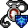

守護霊の護符 Amulet of guardian spirit
英語版 CrawlWiki の記事「Amulet of guardian spirit」(0.31 向け、2026-02-07 版)の翻訳です。原文の著者は編集履歴をご覧ください。
この記事は 0.31 の時点の内容で、最新の 0.34 とは違うところがあるかもしれません。
| 種類 | 装身具 |
|---|---|
| 名前 | 守護霊の護符 |
| アイコン |  |

| 守護の霊が宿る護符で、受けたダメージを着用者の体力と魔力に分散させる。 |
守護霊の護符を身につけると、精霊の盾という固有の性質が得られる。これはあなたの HP と MP を結びつけ、受けたダメージをすべて HP と MP に比例配分する。精霊の盾は毒や能力のコストには影響しない。
ジンニーは MP を持たないので、影響を受けない。歩き蔓と、魔力の盾の変異を持つ悪魔の血族は生まれつき精霊の盾を持っているので、この護符を身につけてもそれ以上の得はない。
戦略
この護符がいちばん向いているのは、MP に比べて HP が少ないキャラクター、つまり呪文使いや、スプリガンやフェリッドのような HP の低い種族だ。そうしたキャラクターにとって守護霊の恩恵はいちばん大きい。たとえばレフディブの水晶槍で一撃(あるいは二撃)で死ぬのを防げるのは、とてもありがたい。
守護霊のおもな「リスク」は、MP が尽きるおそれがあることだ。呪文使いは、モンスターにとどめを刺すだけの MP が残らないかもしれない。さらに大事なのは、神の能力が使えなくなることがある点だ。ジンの聖域は、使うのに必要な8「HP」よりおそらく価値がある。とはいえ、慎重に先を読んで動けばこのリスクは抑えられるし、合計の HP が30ほど増えるのはかなり大きい。
皮肉なことに、狂戦士のように MP をほとんど、あるいはまったく使わないキャラクターにも恩恵がある。HP がただで増えるのだ。ほかにいい護符がないなら、つけておいて損はない。
小技
- 守護霊を長く使うつもりなら、呪文詠唱と祈祷のスキルで最大 MP が増えることを覚えておこう。効くのはどちらか一方のスキルだけで、(呪文詠唱、祈祷/2)のうち高いほうが使われる。
- この護符をつけているときは、(幽体蛾のような)MP を吸い取るモンスターを倒す優先順位を考え直そう。MP を吸い取る力は速いことが多く、抵抗もできない。
変更履歴
- 0.26より前は、この護符を身につけると MP がすべて失われた。身につけるのに0.5ターンしかかからなかったからだ。0.26以降も、闇ドワーフはこの護符を身につけると MP を失っていた。
- 0.10より前は、精霊の盾は MP を使い切ってから体力が減り始める仕組みだったので、呪文使いにはあまり役に立たなかった。
| 装身具 | |
|---|---|
| 護符 | 軽業師 • 化学 • 散逸 • 信仰 • 守護霊 • 魔力再生 • 反射 • 再生 • 野生化 |
| 指輪 | 器用さ • 躱し身 • 飛行 • 知性 • 魔力 • 耐毒 • 生命力保護 • 護り • 耐冷 • 耐火 • 腐食阻止 • 霊視 • 殺戮 • 腕力 • 意志力 • 魔術 |